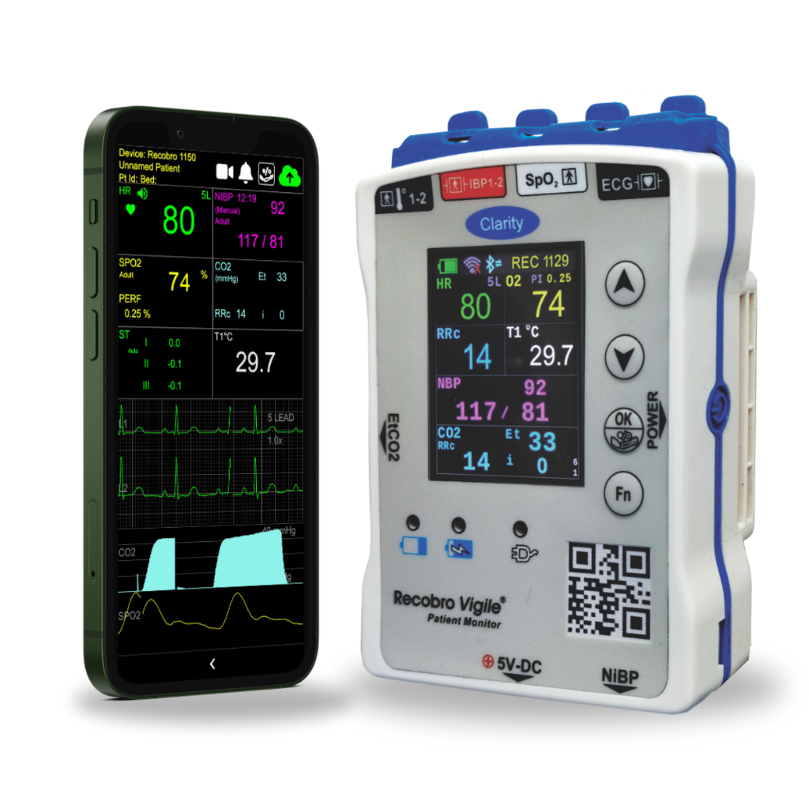

PORTABLE ICU-GRADE TELEMETRY
Real-Time Patient Telemetry At Your Fingertips.
From Emergency Transit To The Doctor's Desk.
Recobro Vigile® is a 300g wearable patient monitor delivering comprehensive 7-parameter vitals (ECG, SpO2, NiBP, IBP, EtCO2) and zero-latency wireless streaming to hospital doctors from ambulance to bedside.
CE 0123 & ISO 13485
24h Battery Backup
2X Lower Hospital OPEX
300g Wearable Form
Trusted by Premier Healthcare Networks & Emergency Fleets



Battery: 4,800 mAh (24h Full Load)
Net Weight: 300 Grams